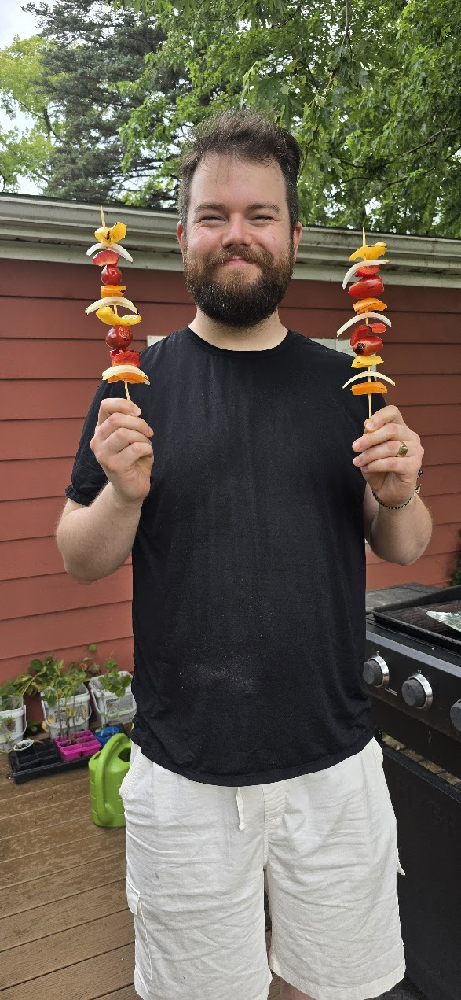
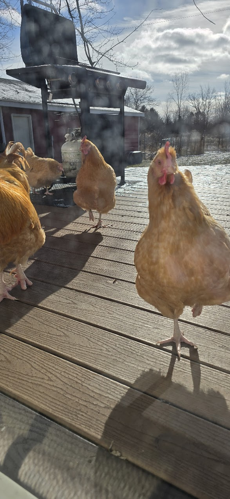
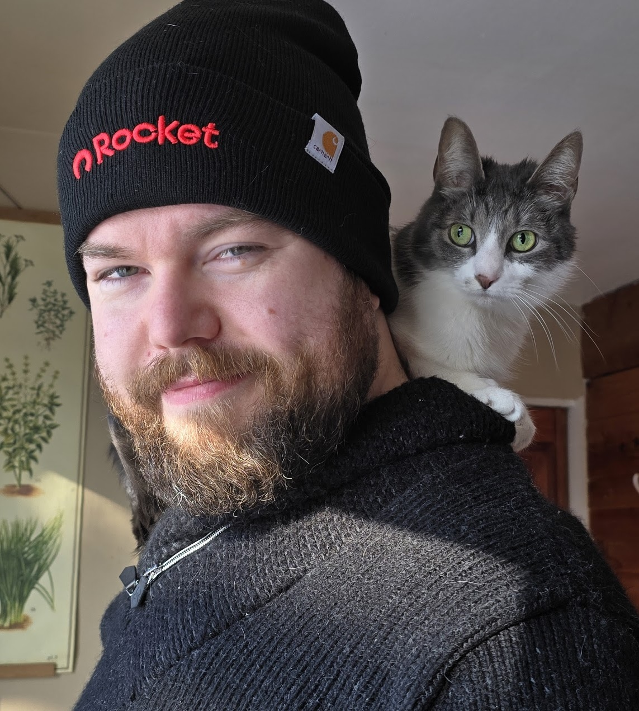
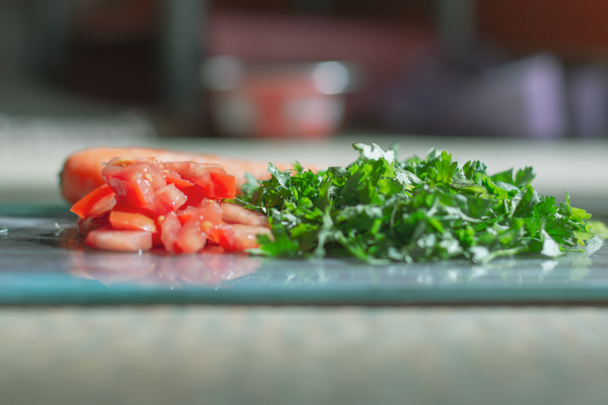

I'm Ken — a Scottish-born data scientist with a Ph.D. in AI, now living in the United States. If you're here for the professional side, head over to Data Science. This page is everything else: the pets, the projects, the hobbies, the half-baked ambitions — the stuff that doesn't fit on a CV but makes up most of a life.
The household includes Brutey — a brindle pup I brought over from Scotland — four cats (Kwee, Chaos, Yoyo, and Nilla), plus a small flock of chickens. They're not pets, really; they're family. Most of my photography ends up being of them, and I wouldn't have it any other way.
Brutey
Chaos

The Flock

I've played guitar since I was about 11. These days I'm drawn to fingerstyle — players like Andy McKee and Antoine Dufour — where one guitar can sound like a whole band. I'd love to start writing my own music soon. I'm also a lifelong listener; I've been tracking my habits on Last.fm since 2014, mostly metal and post-rock.
Listening stats →I'm learning Tamil — very slowly. It's humbling in a way that's different from anything else I do. No shortcuts, no automating it. Just showing up and getting it wrong until something sticks.
I'm vegan, and I cook plant-based with a strong South Asian and Scottish influence. The regular rotation includes kale and hummus salads, soups, stews, and dals. I batch-cook intentionally and think about food in terms of texture, protein anchoring, and what reheats well on a hard day.
I spend a lot of my free time developing fiction. I'm drawn to stories that sit in uncomfortable places — accountability, systemic power, and what happens when elegant principles meet messy reality. I like exploring philosophical thought clashing with the real world: ivory towers versus lived experience.
I run a self-hosted media ecosystem I call KenPlex — built around Plex and about 20 Dockerized services for automation, transcoding, metadata management, and monitoring. The music library alone is around 230,000 tracks, managed with beets and Mp3tag. I've written PowerShell and Python tooling for bulk audiobook conversion to .m4b, automated cover art lookups, and inventory tracking. I also write scripts for fun and put them on GitHub — like my GoodReads stats analysis.
I keep a small garden with very little success — but I dream of growing enough food to feed my family and neighbors. It's the most optimistic thing I do.
